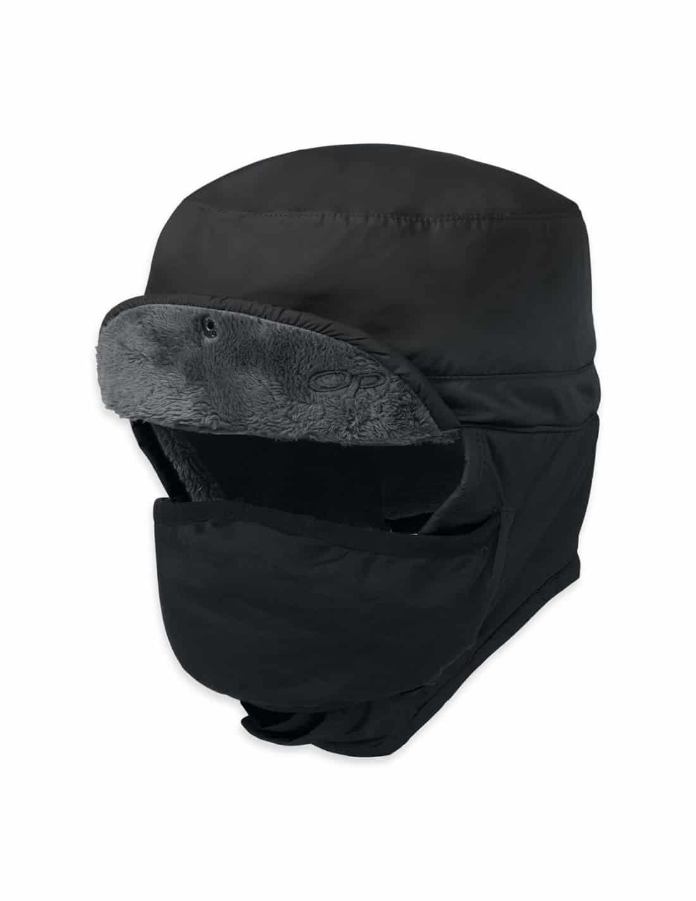
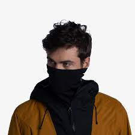
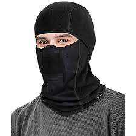
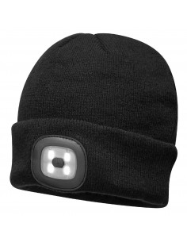

Commençons par le principal, la tête, donc voici une petite liste non exhaustive de ce dont vous avez besoin pour proteger votre "caboche".
45€
Les lunettes de la marque Simond sont ideale pour ce proteger du soleil qui refléte sur la neige, elle sont diponible sur le site de Decathlon
64,90€ - 319,90 €
Les masques de ski sur le site snowleader sont très bien et de tous prix pour une bonne qualité.

69,90 €
La chapka est vraiment parfaite pour ce protéger du froid, vous pourrait trouver votre bonheur sur ce site grand-froid

15,11 €
Le snood est votre meilleur ami de voyage donc forcement il a sa place ici et il convient parfaitement à cette expédition, vous en trouverez sur ce site sowild

9,90€ - 29,90 €
La cagoule est vraimment un plus mais qui peut être nécessaire lors de méthéo trés venteuse, vous pourrez en trouver sur tous les sites déjà citer.

11,90 €
Le bonnet est également de la partie si vous n'aimez pas la chapka ou si elle n'est pas necessaire, celui-ci a une lumière ce qui est utiles dans la penombre, disponible sur le site grand-froid
9,90€ - 64,90 €
Si vous n'aimez pas la petite lumière car cela fait un peu sapins de noël voici le classique bonnet disponible sur snowleader